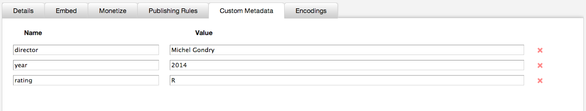
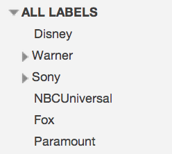
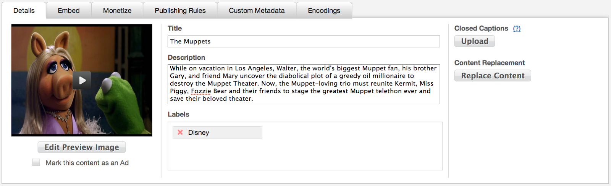
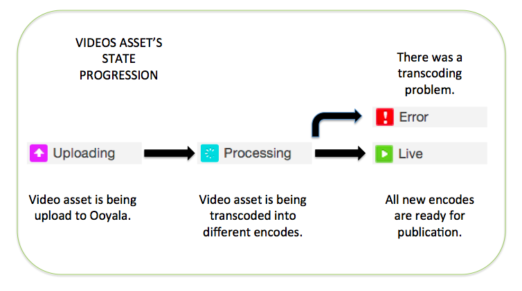

This documentation will walk you through a standard content migration, your options, and
best practices.
If you have an extensive video library, and require assistance in moving your content to Ooyala, you will benefit most from Ooyala’s Content Migration Services. When self-migration (i.e. via Backlot Web upload, FTP, Aspera, APIs) is not an option, a Professional Services-assisted migration makes sense.
Content migration is a three step process:
- Prepare your source and manifest files.
- Upload your source and manifest file.
- Once your videos are Live, publish them to your website, or start swapping your
old embeds with new ones.
Step 1: Prepare your source and manifest files
You should always
start with the best quality source material available. Ooyala has specific
recommendations at Quality of and Recommendations on Source Material (Video and Audio). Once you have your source files ready, you should start working
on your manifest file.
The term
metadata is used here in two ways:
If you are planning on making bulk assignments of either custom players, ad
sets, or syndication rules, consider that the easiest way of multi-selecting assets
is to group them by Labels. For example, it might make sense to add and assign to
assets labels like: "Blue Player", "Green Player", "Only Colombia", "Kid Friendly"
etc ...
Custom Metadata. Continuing with our movie library example,
once your manifest file is processed, you can log into Backlot and find assigned
Custom Metadata on each asset's Custom Metadata Tab.

Label Hierarchy. See your Label hierarchy in the Manage window.

Label Assignments per Asset. See Label assignments per asset in its Details Tab.

Use create manifest files in either XML or CSV. See
Manifest File Formats for details.
Step 2: Upload your source and manifest file
Ooyala supports several
Ways to Ingest Content:
- Backlot UI
- Ooyala Import Services (OIS), with or without metadata about the videos in
either comma-separated value (CSV) or XML format, via the following transport
mechanisms:
- Backlot API, specifically the /v2/assets routes
See
Ingestion for details.
Step 3: Once your videos are Live, publish them to your website
Throughout the content migration process, video assets pass through several states:

If you encounter a video in an Error state, contact Technical Support for
troubleshooting. Videos in the Live state are ready for publishing.
To learn how to
embed a player on a web page and its structure, see Player.
If you are planning on
swapping old players, you will need to:
- Find and identify all your old player embeds.
- Assign each video a unique identifier that you can tie back with its old embeds,
and save that identifier on either the id field of the CSV
manifest file or in the guid field of the XML manifest
file.
- Once the Content is Live, you will need to construct a file mapping your new
embed identifiers with the old one using our APIs. Also, if your site uses
dynamic pages, playlists, or channels, you will need to re-program them using
Ooyala's APIs. See Backlot REST API.